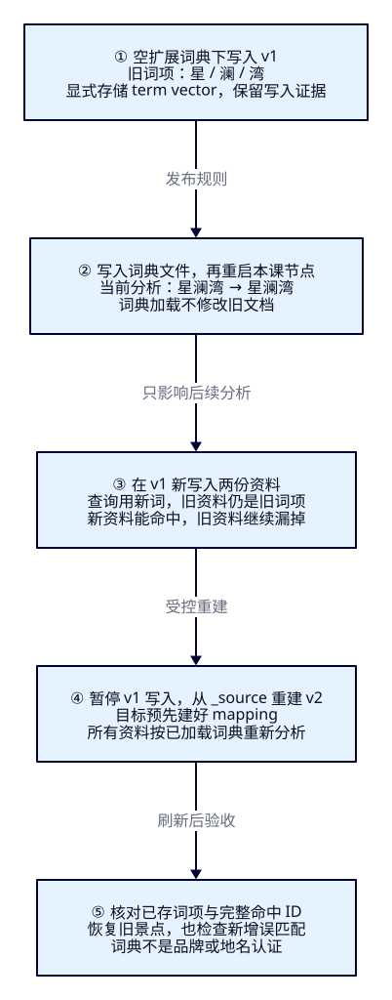
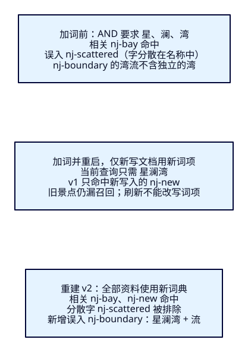

新酒店品牌和地名，
怎样进入搜索词典？
运营刚上线“云栖里”品牌酒店与“星澜湾”目的地。把它们加进词典后，查询变成了完整新词，旧资料却突然消失。沿着文件、已加载规则、历史词项与真实候选四层证据，本课解释怎样修复，以及为什么加词仍可能搜错。
学完能证明什么
- 用实际token说明本地词典何时加载，把“文件改了”和“规则生效”分开。
- 对照已存term vector与真实搜索，解释同一索引里新资料能搜到、旧资料搜不到的原因。
- 以固定原文完成受控重建，核对漏召回恢复与新增误匹配，REST与Java得到相同ID和次序。
1. 游客找的是一个名字，ES比较的是词项
F14学会按固定语料比较分析方式，下一步是维护旅游业务不断出现的名字。游客输入“星澜湾”，想看到目的地观景台；未加词的ik_smart把它切成三个单字。使用AND时，名称里只要分散地包含这些字，“星港澜庭湾畔酒店”也可能进来。运营希望把地名看成整体，减少这种串字匹配。
专有词在这里就是业务希望保留边界的名字，例如一个品牌或地名。词典向某种分析实现提供词条，影响它怎样识别边界；它不登记实体归属，不证明同名商户属于这个品牌。ES仍负责按字段词项检索和过滤，品牌认定与运营资料仍由业务维护。本课酒店只是一份名称资料，不涉及房型、库存或预订。
2. 词典有了，不等于历史词项有了
先区分四件事：磁盘里有词条；节点内的分析器已加载词条；文档写入时实际产生了哪些词项；当前查询与哪些资料匹配。修改其中一层，其他层不自动随之更新。原有_source保存原文，倒排等索引表达由写入时分析形成；下次查询分析器读到新词，不会逐份把历史原文重新分析。
本课固定使用IK9.4.0的ik_smart，索引与搜索都用它。扩展文件通过ext_dict配置，本课采用本地文件发布后重启隔离节点的路径。实测仅改文件时分析不变；重启后token改变。没有把此机制推广为所有中文插件通用的词典API，SmartCN、ICU的定制路径不由IK配置决定。
IK也提供远程词典更新方式，维护方说明使用HTTP响应版本头与逐行词条。那是另一条加载链路，本课没有部署远程服务，也不宣称已验证远程热更新、传播时限或多节点一致性。无论怎样加载，后续查询采用新规则与旧文档自动改写始终是两件事。IK维护方配置说明用于定位入口，具体9.4.0行为以本轮制品与实测为准。

3. 九份旧资料，两份新资料，先固定判断
以下名字与业务意图均为虚构教学样本。独立端口19215，索引tut-f15-v1/v2，ES9.4.0/Lucene10.4.0、一主零副本、strict、refresh_interval=-1。名称用ik_smart，金额是整数分。两查询都限定所选城市、open、CNY、0–10000分（含端点），AND，按keyword业务ID升序；不按分数排名。
| ID | name | 城市 / 状态 / 币种 / 分 |
|---|---|---|
| hz-brand | 云栖里酒店 | HZ / open / CNY / 8000 |
| hz-closed | 云栖里酒店西店 | HZ / closed / CNY / 7000 |
| hz-expensive | 云栖里酒店湖店 | HZ / open / CNY / 15000 |
| nj-brand | 云栖里酒店南京店 | NJ / open / CNY / 8000 |
| nj-bay | 星澜湾观景台 | NJ / open / CNY / 0 |
| nj-scattered | 星港澜庭湾畔酒店 | NJ / open / CNY / 6000 |
| nj-boundary | 星澜湾流科普馆 | NJ / open / CNY / 3000 |
| nj-closed | 星澜湾夜游 | NJ / closed / CNY / 5000 |
| nj-usd | 星澜湾码头 | NJ / open / USD / 5000 |
杭州“云栖里”意图是品牌酒店，旧资料只有hz-brand相关；南京“星澜湾”意图是目的地游览，旧资料只有nj-bay相关。nj-boundary指“星澜”场馆的“湾流”科普主题，不属于该目的地，该排除判断在正式对照前已写进人工判断文件。名称表面包含同样字符串，不等于语义相关。
加载新词后再加入hz-new“云栖里酒店东店”（HZ/open/CNY/9000分）和nj-new“星澜湾栈道”（NJ/open/CNY/0分），它们分别补入相关名单。新增后总数11。南京品牌酒店被杭州城市条件挡住；closed、超预算、USD也各有明确排除理由，不能把过滤效果算作词典效果。
4. f15-c01：先记录没有扩展词条时的样子
需要Docker/Compose、Bash、curl、Python3.10+。从本机实验入口执行，保留前课与源码篇节点。沿用F14已锁定的IK9.4.0制品URL/本地SHA512，下载脚本核对哈希与descriptor后才构建；该指纹不是独立发布的签名。派生镜像只安装IK，插件清单必须显示analysis-ik9.4.0。
cd projects/travel-search
export ES_URL=http://127.0.0.1:19215
python3 infra/f15/fetch.py
docker compose -f infra/f15/compose.yaml build es
python3 infra/f15/select-dictionary.py empty
docker compose -f infra/f15/compose.yaml up -d es
# up 不会让已运行的节点重新加载文件；首次也可显式重启
# 已有本课索引时，先看第11节清理，再从这里重做
docker compose -f infra/f15/compose.yaml restart es
bash infra/f15/wait.sh
bash labs/f15/01-baseline.sh脚本先核对版本、插件与两份查询的旧token，确认前提后才创建v1。若索引已存在，创建报400就停下；不自动覆盖。Bulk九项应全created/errors=false，显式refresh、green且未超时、count=9，完整mapping/settings都核对。下面是实际建索引请求；term_vector是本课为了观察而额外保存的写入证据，不是所有业务字段默认都有。
{
"settings": {
"number_of_shards": 1,
"number_of_replicas": 0,
"refresh_interval": "-1"
},
"mappings": {
"dynamic": "strict",
"properties": {
"attraction_id": {
"type": "keyword"
},
"city_code": {
"type": "keyword"
},
"status": {
"type": "keyword"
},
"currency": {
"type": "keyword"
},
"ticket_price_fen": {
"type": "integer"
},
"name": {
"type": "text",
"analyzer": "ik_smart",
"search_analyzer": "ik_smart",
"term_vector": "with_positions_offsets"
}
}
}
}curl --fail-with-body -sS -X PUT "$ES_URL/tut-f15-v1" -H 'Content-Type: application/json' --data-binary @search/f15/index.json
curl --fail-with-body -sS "$ES_URL/_cluster/health/tut-f15-v1?wait_for_status=green&timeout=30s"
curl --fail-with-body -sS -X POST "$ES_URL/tut-f15-v1/_bulk" -H 'Content-Type: application/x-ndjson' --data-binary @data/f15/attractions.ndjson
curl --fail-with-body -sS -X POST "$ES_URL/tut-f15-v1/_refresh"
curl --fail-with-body -sS "$ES_URL/tut-f15-v1/_count"分析与搜索请求的语义分开看。分析只处理提供的文本；搜索才使用已写资料。下面两份JSON分别用于POST /tut-f15-v1/_analyze与POST /tut-f15-v1/_search。另一份品牌查询完整文件是brand.json，只变关键词与城市。
{
"analyzer": "ik_smart",
"text": "星澜湾"
}{
"size": 20,
"track_total_hits": true,
"track_scores": true,
"query": {
"bool": {
"must": [
{
"match": {
"name": {
"query": "星澜湾",
"operator": "and"
}
}
}
],
"filter": [
{
"term": {
"city_code": "NJ"
}
},
{
"term": {
"status": "open"
}
},
{
"term": {
"currency": "CNY"
}
},
{
"range": {
"ticket_price_fen": {
"gte": 0,
"lte": 10000
}
}
}
]
}
},
"sort": [
{
"attraction_id": "asc"
}
]
}实际“云栖里”产生云栖 / 里，命中hz-brand；“星澜湾”产生星 / 澜 / 湾，命中nj-bay、nj-scattered。后者名称中的三个字不相邻，AND仍能满足。nj-boundary含“湾流”这个整体词，缺独立“湾”，此时反而没有误入。
5. f15-c02：先只改文件，再重启加载
本课把扩展配置挂到安装目录的config/analysis-ik/IKAnalyzer.cfg.xml；只挂配置文件与custom目录，保留插件随包主词典。相对路径基于该配置目录，文件按UTF-8逐行写词条。选择脚本改的是宿主机.runtime/words.dic，Compose只读挂载给节点。
<?xml version="1.0" encoding="UTF-8"?>
<!DOCTYPE properties SYSTEM "http://java.sun.com/dtd/properties.dtd">
<properties>
<entry key="ext_dict">custom/words.dic</entry>
<entry key="ext_stopwords"></entry>
</properties>云栖里
星澜湾# 仍在 projects/travel-search；02写文件，不重启
bash labs/f15/02-file-only.sh
# 此刻两查询的token/ID仍与基线相同
# 03重启，先查旧资料，再写两份新资料
bash labs/f15/03-load-and-new.sh02后文件已有两行，但查询仍是原来的散词，命中也保持1份/2份。03真实重启同一节点、保留同一数据卷；重启后“云栖里”和“星澜湾”各变成一个完整词。插件版本未变、mapping未改，这次改变来自扩展词典的实际加载。用_analyze确认输出，比看到文件存在或容器已启动更直接。
6. 新查询已变，旧资料为什么还没变
03先搜索旧九份资料，两查询都是0。随后写入两份新资料并refresh，再搜索只得hz-new与nj-new。旧资料仍存在，count从9到11；同一个v1里出现两代分析结果。refresh让新写入可搜索，重启重新打开存量索引，两者都不会把旧原文再分析一遍。
现在检查旧文档的已存term vector。它是写入时额外保存的词项、位置和offset。本课明确开启with_positions_offsets，请求点名已有ID，不传人工doc或per_field_analyzer覆盖；因此这里读的是存储的分析证据。未保存向量时ES可临时生成，不能拿那种输出证明旧写入行为。
{
"fields": [
"name"
],
"positions": true,
"offsets": true,
"term_statistics": false,
"field_statistics": false
}nj-bay仍是星(0,[0,1)) / 澜(1,[1,2)) / 湾(2,[2,3)) / 观景台(3,[3,6))；当前查询却是星澜湾(0,[0,3))。括号内依次是position与UTF-16半开offset。词项不相等，所以旧景点漏掉。新nj-new的已存词项含星澜湾，能匹配。两份原始请求与完整响应保存在本课验收文件，右侧观察窗也会显示旧词项。
7. f15-c03：从原文重新建立索引表达
本实验采用最小的受控重建：停止v1业务写入、创建空v2，再把v1的_source重新写入v2。目标字段按当前已加载的ik_smart重新分析；不是复制v1旧倒排。提前显式创建目标配置，因为_reindex不替你复制全部settings/mapping。原索引保留作对照，读者可在观察窗选择两个实体索引。
bash labs/f15/04-rebuild.sh{"index.blocks.write": true}再用第4节同一完整配置执行PUT /tut-f15-v2并等green。然后：
{
"source": {
"index": "tut-f15-v1"
},
"dest": {
"index": "tut-f15-v2",
"op_type": "create"
}
}curl --fail-with-body -sS -X POST "$ES_URL/tut-f15-v2/_refresh"
curl --fail-with-body -sS "$ES_URL/tut-f15-v2/_count"实际total=11、created=11、updated=0、version_conflicts=0、failures=[]、timed_out=false，refresh零失败、count=11。逐份_source与v1相同，ID也相同；v2的nj-bay已存词项变为星澜湾/观景台。重建改变搜索表达，原文不需要被改名。
这里没有持续来源写入，也没有alias切换。通过写阻塞消除本课样本变化，不能据此宣称完成在线零停机迁移；并发变更、切流与恢复留到F33/F41。再次运行create型重建会遇到目标已有数据的409冲突；不要把updated或忽略冲突当成回到起点，按第11节点名删建。
8. 旧资料回来了，为什么还有新误入
| 阶段 | 云栖里 / HZ 完整ID | 星澜湾 / NJ 完整ID |
|---|---|---|
| 基线v1（9份） | hz-brand | nj-bay、nj-scattered |
| 只改文件v1 | hz-brand | nj-bay、nj-scattered |
| 重启后，仅旧资料 | 空 | 空 |
| 新写两份后的v1 | hz-new | nj-new |
| 重建v2（11份） | hz-brand、hz-new | nj-bay、nj-boundary、nj-new |
新词典让“星港澜庭湾畔酒店”不再满足完整词，消除了一个串字误入；重建让旧观景台与新栈道一起被找到，修复了加载后旧词项造成的漏召回。但nj-boundary也进入了v2：原来“湾流”是一个词，加词后变成星澜湾 / 流 / 科普 / 馆。查询完整词正好存在，硬条件也全满足。它是词边界变化引入的新误匹配，不能把命中从1涨到3都算作改善。

词典发布应像查询逻辑变更一样保留版本、分析样本与坏案例。若词项原本就适合当前查询，不必为了“加过词”机械地重建；若希望既有资料获得新的索引表达，就需要重新分析并写入。移除词条、回退词典也只改变后续分析，不会把已经写入的新词项自动倒回去。重新加载与重建各有自己的验收。
9. REST语义对应到官方Java客户端
沿用Boot4.0.8、应用Temurin25.0.4.1+1、官方Java API Client与Rest5 Client9.4.8、Wrapper3.3.4/Maven3.9.11。应用JDK与ES镜像内置JVM分别核对。浏览器只提交关键词、HZ/NJ、整数分预算与original/rebuilt；服务端固定两个索引、name、ik_smart与旧文档ID，不接受任意索引/分析器。
cd projects/travel-search/backend
# JAVA_HOME指向本机JDK25；18080若由前课占用，先关闭自己的旧服务
./mvnw clean package
ES_URL=http://127.0.0.1:19215 APP_PORT=18080 java -jar target/travel-search-0.7.0.jarpackage dev.esweb.travel;
import co.elastic.clients.elasticsearch.ElasticsearchClient;
import co.elastic.clients.elasticsearch._types.SortOrder;
import co.elastic.clients.elasticsearch._types.query_dsl.Operator;
import co.elastic.clients.elasticsearch.core.SearchRequest;
import co.elastic.clients.elasticsearch.core.TermvectorsRequest;
import co.elastic.clients.elasticsearch.indices.AnalyzeRequest;
import co.elastic.clients.json.JsonpUtils;
import java.io.IOException;
import java.util.Comparator;
import java.util.List;
import org.springframework.stereotype.Service;
import tools.jackson.databind.JsonNode;
import tools.jackson.databind.json.JsonMapper;
@Service
public class DictionarySearchService {
private final ElasticsearchClient client;
private final JsonMapper json;
public DictionarySearchService(ElasticsearchClient client, JsonMapper json) {
this.client = client; this.json = json;
}
public record StoredToken(String token, int position, int startOffset, int endOffset) {}
public record Result(long total, String relation, long tookMs, DictionaryInput conditions,
String index, String exampleId, JsonNode queryAnalysisRequest, JsonNode storedVectorRequest,
List<AnalysisSearchService.Token> queryTokens, List<StoredToken> storedTokens,
JsonNode storedVectors, JsonNode esRequest, List<AnalysisSearchService.Card> items) {}
public String index(DictionaryInput input) {
return switch (input.view()) {
case "original" -> "tut-f15-v1";
case "rebuilt" -> "tut-f15-v2";
default -> throw new IllegalArgumentException("Unknown dictionary view");
};
}
public SearchRequest request(DictionaryInput input) {
return SearchRequest.of(s -> s.index(index(input)).size(20).trackTotalHits(t -> t.enabled(true)).trackScores(true)
.query(q -> q.bool(b -> b.must(m -> m.match(t -> t.field("name")
.query(input.q()).operator(Operator.And)))
.filter(f -> f.term(t -> t.field("city_code").value(input.cityCode())))
.filter(f -> f.term(t -> t.field("status").value("open")))
.filter(f -> f.term(t -> t.field("currency").value("CNY")))
.filter(f -> f.range(r -> r.number(n -> n.field("ticket_price_fen")
.gte(0.0).lte(input.maxPriceFen().doubleValue()))))))
.sort(srt -> srt.field(f -> f.field("attraction_id").order(SortOrder.Asc))));
}
public Result search(DictionaryInput input) throws IOException {
String index = index(input);
// Fixed old document: not a current re-analysis of its _source.
String example = input.cityCode().equals("HZ") ? "hz-brand" : "nj-bay";
var analysis = AnalyzeRequest.of(a -> a.index(index).analyzer("ik_smart").text(input.q()));
var vectorRequest = TermvectorsRequest.of(t -> t.index(index).id(example).fields("name")
.positions(true).offsets(true).termStatistics(false).fieldStatistics(false));
var queryTokens = client.indices().analyze(analysis).tokens().stream()
.map(AnalysisSearchService.Token::from).toList();
var vectors = client.termvectors(vectorRequest);
var field = vectors.termVectors().get("name");
if (!vectors.found() || field == null)
throw new AttractionSearchService.IncompleteSearchException();
var stored = field.terms().entrySet().stream().flatMap(entry -> entry.getValue().tokens().stream().map(t -> {
if (t.startOffset() == null || t.endOffset() == null)
throw new AttractionSearchService.IncompleteSearchException();
return new StoredToken(entry.getKey(), t.position(), t.startOffset(), t.endOffset());
})).sorted(Comparator.comparingInt(StoredToken::position).thenComparing(StoredToken::token)).toList();
var request = request(input);
var response = client.search(request, Attraction.class);
if (response.timedOut() || response.shards().failed().longValue() != 0 || response.hits().total() == null)
throw new AttractionSearchService.IncompleteSearchException();
var cards = response.hits().hits().stream().map(hit -> {
var source = hit.source();
if (source == null || !hit.id().equals(source.attractionId()) || source.name() == null
|| source.ticketPriceFen() == null || source.cityCode() == null)
throw new AttractionSearchService.IncompleteSearchException();
List<Object> sort = hit.sort().stream().map(v -> (Object) v._get()).toList();
return new AnalysisSearchService.Card(hit.id(), source.name(), source.cityCode(), source.ticketPriceFen(), hit.score(), sort);
}).toList();
return new Result(response.hits().total().value(), response.hits().total().relation().jsonValue(), response.took(), input,
index, example, json.readTree(JsonpUtils.toJsonString(analysis, client._jsonpMapper())),
json.readTree(JsonpUtils.toJsonString(vectorRequest, client._jsonpMapper())), queryTokens, stored,
json.readTree(JsonpUtils.toJsonString(vectors, client._jsonpMapper())),
json.readTree(JsonpUtils.toJsonString(request, client._jsonpMapper())), cards);
}
}查询分析与词向量是教学诊断，正常业务搜索不必每次都调用。Java读取固定旧ID的已存词项，不把所有卡片都称为这个样本。输入用Bean Validation：关键词1至60个UTF-16单位，预算0至100000000整数分；白名单来自本课文件，不声称由浏览器动态发现。缺索引或ES拒绝502、连接不可用503、超时/部分失败/缺关键结果502，返回统一错误体并停止展示旧结果。
完整输入校验、Controller与连接复用
package dev.esweb.travel;
import jakarta.validation.constraints.*;
public record DictionaryInput(
@NotBlank @Size(max = 60) String q,
@NotNull @Pattern(regexp = "HZ|NJ") String cityCode,
@NotNull @Min(0) @Max(100000000) Integer maxPriceFen,
@NotNull @Pattern(regexp = "original|rebuilt") String view) {
}package dev.esweb.travel;
import jakarta.validation.Valid;
import java.io.IOException;
import org.springframework.http.ResponseEntity;
import org.springframework.http.converter.HttpMessageNotReadableException;
import org.springframework.web.bind.MethodArgumentNotValidException;
import org.springframework.web.bind.annotation.*;
@RestController
public class DictionaryController {
private final DictionarySearchService service;
public DictionaryController(DictionarySearchService service) { this.service = service; }
@ExceptionHandler({MethodArgumentNotValidException.class, HttpMessageNotReadableException.class})
public ResponseEntity<ApiErrors.ErrorBody> invalid(Exception error) {
return ResponseEntity.badRequest().body(new ApiErrors.ErrorBody("INVALID_DICTIONARY_INPUT",
"请填写1至60个UTF-16单位的关键词、HZ/NJ城市、非负整数分预算和原索引/重建索引。"));
}
@PostMapping("/api/attractions/dictionary-search")
public DictionarySearchService.Result search(@Valid @RequestBody DictionaryInput input) throws IOException {
return service.search(input);
}
}连接沿用EsConfiguration，共用错误分支见ApiErrors。
bash labs/f15/05-java.sh
# 以下为可选手工重复，不加入84条主流程计数
curl --fail-with-body -sS -X POST http://127.0.0.1:18080/api/attractions/dictionary-search -H 'Content-Type: application/json' --data-binary @search/f15/input-bay.json四份输入为两查询×两索引，各把Java实际序列化的分析请求、词向量请求与搜索DSL重放REST。核对完整token/position/offset、已存词向量、ID/次序/名称/价格/score/sort/total/relation；界面卡片数量不能代替这些核对。
10. 用本机观察窗对照历史
打开本机F15观察窗。在重建完成后，以星澜湾/南京/100元先看原索引：当前查询一个词，右列旧nj-bay仍四个词，只见新nj-new；选重建索引，右列变成星澜湾/观景台，出现三张卡，逐份指出nj-boundary为什么多了。改云栖里/杭州，原索引1份、重建2份，8000/9000分价格与ID核对。
这个选择框切换的是两份索引，不会切换节点词典版本。要看加词前状态，必须按实验顺序恢复空扩展词典并重建基线。改变条件会清空旧token、卡片、请求与结果；失败也清空，合法空集显示0份，不能冒充连接错误。预算改为0时，南京重建索引只剩nj-bay/nj-new，误入因价格被挡住，并不说明词边界修好了。
真实调用是浏览器→Java→19215的ES，浏览器不直连ES、不带ES凭据。Pages只承载教程，观察窗由课程提供，无需写前端。工程验收与HTTP/视觉验收分别记录。
11. 点名清理，恢复空词典，再做一遍
cleanup只删本课v2/v1，逐个GET确认404；不动其他索引或数据卷。v1写阻塞随删除消失。恢复空文件后必须重启节点，否则上一轮内存仍是新词典，首阶段预检会拒绝继续。每轮Bulk九份、两份都应created，而非updated。
bash labs/f15/cleanup.sh
python3 infra/f15/select-dictionary.py empty
docker compose -f infra/f15/compose.yaml restart es
bash infra/f15/wait.sh
bash labs/f15/01-baseline.sh
bash labs/f15/02-file-only.sh
bash labs/f15/03-load-and-new.sh
bash labs/f15/04-rebuild.sh
bash labs/f15/05-java.sh
# 结束时，清理本课索引，关闭自己启动的Java；保留数据卷
bash labs/f15/cleanup.sh
docker compose -f infra/f15/compose.yaml stop es三案例教学HTTP为23+25+20，再加Java及REST16，总84；清理、探活、下载/构建、可选手工请求、浏览器和作者附加检查另计。实际包含两轮完整词典切换与点名重做；未测试远程词典、多节点传播、性能与全站中文质量。F16将讨论别名/同义词与繁简，本课不提前实现。
版本依据与已存词项的源码边界
v9.4.0 TermVectorsService.getTermVectors/addGeneratedTermVectors先读取已存向量；未存字段或请求覆盖analyzer可触发生成。本课显式存储且不覆盖。官方_reindex说明支持从_source写入目标并要求预先配置目标。必要本地源码与官方tag逐字节核对，见来源收据。IK只声明本次9.4.0制品的安装、配置与实际行为，未用master源码冒充制品源码。
能力检查：先解释，再执行
1. 磁盘已有“星澜湾”，_analyze还是三词，先查什么？
核对本课节点、配置相对路径、UTF-8与实际加载流程。本课本地词典要重启后观察token；不能只看文件存在就断言ES生效，也不先删除业务索引碰运气。
2. 重启后_analyze为一个词，旧景点为什么搜不到？
当前查询变了，旧文档仍保存旧词项。读取本课已存term vector并对照实际_search；_analyze处理输入，不读取旧倒排。
3. 给v1再refresh十次，可以修复旧景点吗？
不能。refresh提供搜索可见性，不重新分析未改写文档。重启同一数据卷也不会重新生成全部词项。
4. 不开启term_vector，调用_termvectors还能当历史证据吗？
不能直接这样推断，API可能按当前规则临时生成。本课存储with_positions_offsets，并且不传doc或per_field_analyzer覆盖，才用它核对当时写入词项。
5. 重建后星澜湾从1涨到3，是三个相关结果吗？
相关是nj-bay/nj-new，nj-boundary是新误入。必须按事先意图逐份判断；词典不懂场馆“星澜”与词语“湾流”的业务边界。
6. 独立把南京预算改为0，预测原/重建索引的ID。
新旧混存的原索引只有nj-new；重建有nj-bay/nj-new，均免费。nj-boundary因价格被过滤，不能归因为分析改善。用同一预算让Java实际DSL重放REST。
7. 删除扩展词、重启，就能让已重建v2恢复旧规则吗？
只影响之后的分析。v2现有词项仍是新词，可能与回退后的查询失配。恢复既有资料的旧表达也要明确重新写入/重建；本课通过删建和固定源文件回到基线。
实际陷阱
分别保存文件版本、当前_analyze、已存向量与_search。只更新词典、只重启或只refresh都不能自动改写旧资料。
未存向量或覆盖analyzer会改变证据含义；本课mapping和请求前提必须一起保留。term vector也只是分析表达证据，实际可搜索性仍以_search确认。
长词会改变邻接词边界；本课既消除分散字误入，也新增“湾流”主题馆误入。小样本效果不认证全站质量，单节点重启不认证在线发布。
速记与下一课
| 问题 | 判断证据 |
|---|---|
| 词典加载了吗 | 固定制品/配置/词条版本与实际_analyze |
| 旧资料会变吗 | 不会自动改写；已存term vector与新查询对照 |
| 怎样统一表达 | 受控从_source重新写入，目标配置/响应/可见性/计数/ID逐项核对 |
| 是不是更准 | 相关ID、漏召回、旧误入消失与新增误入分别统计 |
加载词典改变后续分析，重建才让历史资料获得新表达；之后还要检查搜得对不对。“紫禁城”和“故宫”即使各自分词正确，仍是不同词项。下一课F16讨论别名、同义词与繁简，并继续防止同名景点串城市。